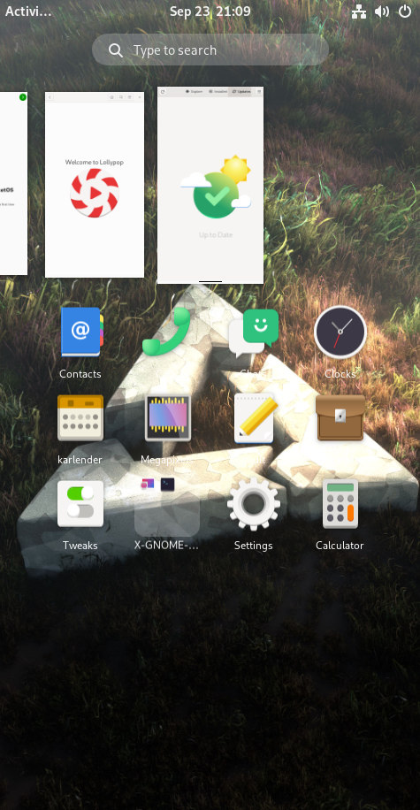
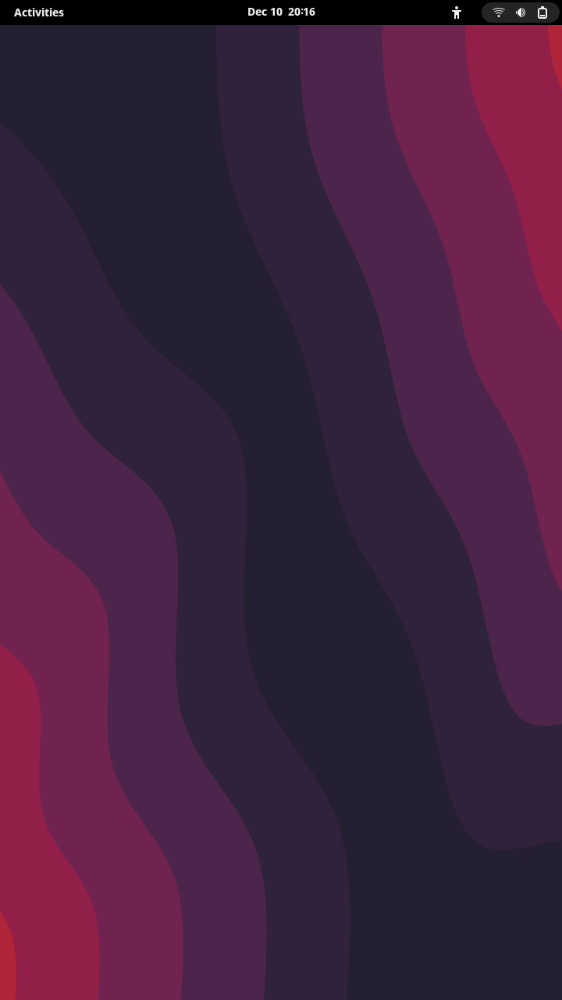

GNOME
GNOME is a fairly adaptive DE, but GNOME Shell and Mutter are not very comfortable to use on a phone because of their lack of touchscreen gestures. However, this is being developed (among other things). Especially Jonas Dreßler has been working on this and whose changes to GNOME Shell/Mutter you can find from his repos (GNOME Shell, Mutter). It's very WIP stuff, so these changes haven't been added to the official GNOME repos yet. During pmbootstrap init you can choose either "gnome" (the official GNOME release) or "gnome-mobile" (same as the previous one, but including whose WIP changes from Dreßler's repos)
Contents
GNOME with GNOME Shell/Mutter WIP mobile patches
|
 Gnome Shell w/ mobile patches running on pmbootstrap qemu | |
| Name | Gnome Shell Mobile (Experimental) |
|---|---|
| Graphics stack | Mutter |
| Toolkit | Clutter |
| In postmarketOS | |
| Package | postmarketos-ui-gnome-mobile |
| Status | Available |
{kind=link}
{kind=link}
Gnome Shell/Mutter with mobile patches from fork on https://gitlab.gnome.org/verdre. Currently being upstreamed to the main Gnome Shell/Mutter. Very much WIP. More info: https://blogs.gnome.org/shell-dev/2022/09/09/gnome-shell-on-mobile-an-update/
How to test
- Install with pmbootstrap at https://wiki.postmarketos.org/wiki/Installation_guide, selecting `edge`, and selecting `gnome-mobile: (Wayland) Gnome Shell patched to adapt better to phones (Experimental)` under "available user interfaces".
- Download images from the edge channel at https://images.postmarketos.org/bpo/edge/ for devices like the Pinephone Pro or Oneplus 6.
How to file bugs
This is under active development and has many known and unknown bugs. It is packaged here in order to be a development target. Please report the issues to postmarketOS before filing upstream, as at this early stage it is unknown whether potential bugs may be due to packaging or in the code upstream.
See also
- pmaports!3404: initial MR
GNOME without GNOME Shell/Mutter WIP mobile patches
|
 Gnome Shell without mobile patches running on Redmi 2 | |
| Name | Gnome Shell |
|---|---|
| Graphics stack | Mutter |
| Toolkit | Clutter |
| In postmarketOS | |
| Package | postmarketos-ui-gnome |
| Status | Available |
{kind=link}
{kind=link}
The stock gnome experience for desktop/laptop.
See also
- pmaports!990: initial MR
- pmaports#94: initial Issue
Extensions
Screen manual/auto rotate button
GNOME supports automatic screen rotation, but on a phone it is often useful to switch between manual/automatic rotation on the fly. This adds a button to the system status area.
https://github.com/shyzus/gnome-shell-extension-screen-autorotate
On phones without support for the gyroscope the following extension adds just a button to manually rotate the screen instead.
https://gitlab.gnome.org/gnumdk/add-rotate-button
Clock to the left
Many phones/mobile devices have a notch that makes it necessary to move the clock of top bar to left edge. This extension does just that:
https://gitlab.gnome.org/gnumdk/move-shell-clock/
TODO: Flashlight button
Start flaslight button to the system status area.
How to install
- Install with pmbootstrap at https://wiki.postmarketos.org/wiki/Installation_guide, selecting `edge`, and selecting `gnome` under "available user interfaces".